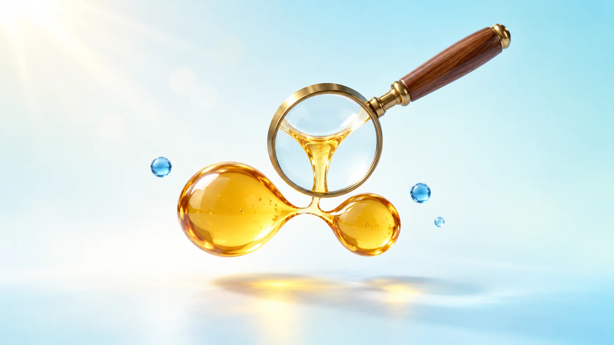
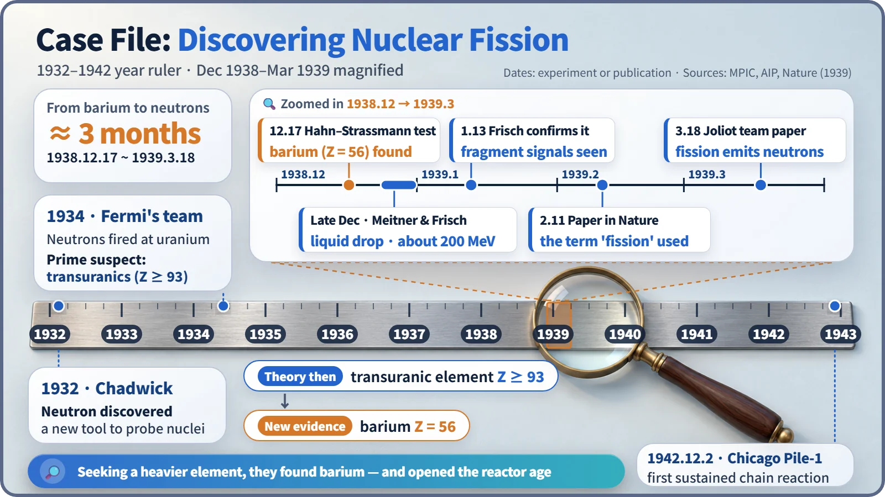
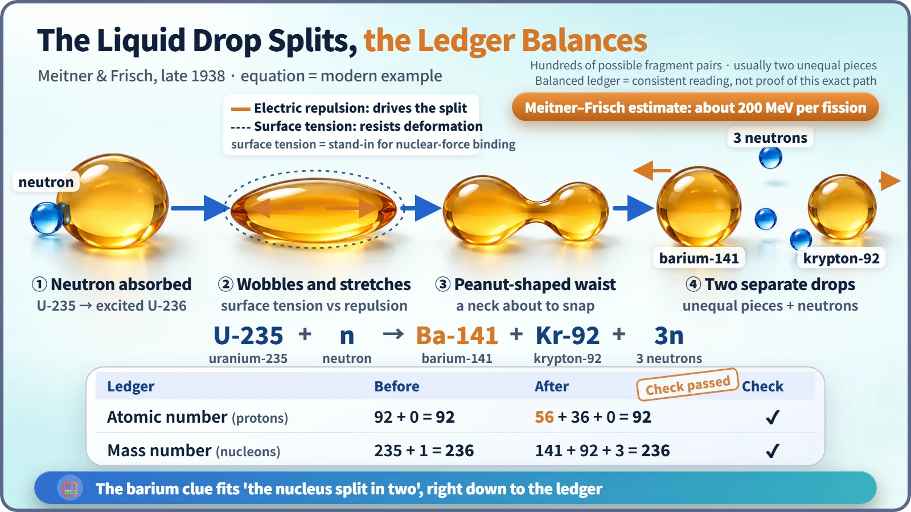

Nuclear Reactions & Fission · 028
The Culprit Was Supposed to Be a Heavier Element — How Nuclear Fission Was Discovered, Detective-Story Style
Chemists expected a heavier element and found barium. Physicists explained it as a nucleus splitting in two, and the hunt for transuranics opened the road to the reactor.

In December 1938, chemists bombarding uranium with neutrons expected a heavier element and found barium, an element about half uranium's size. Within weeks, physicists explained it as the nucleus splitting in two, releasing about 200 MeV, and by March 1939 it was clear that fission also releases new neutrons, opening the road to the chain reaction. [1] [2]
A baffling clue in a Berlin lab
The best moment in a detective story is when the inspector is sure he knows who did it, and the forensic report points to someone else entirely.
In mid-December 1938, the Berlin chemists Otto Hahn and Fritz Strassmann were in exactly that spot. They had bombarded uranium with neutrons and chemically sifted through the products one by one, and the clue left at the end was barium. Barium is element number 56; uranium is number 92. They had poked a heavy uranium nucleus and out came a light element a little over half its size. Hahn checked again and again, and the result would not change.
That clue was the first evidence of nuclear fission, in which a heavy nucleus splits into two pieces. [1]
The suspect everyone named
The story starts in 1932, when James Chadwick discovered the uncharged neutron. With no charge, it is not blocked by a nucleus's electric repulsion, which gave scientists a new tool for probing nuclei.
In 1934, Enrico Fermi's team in Rome fired neutrons at one element after another, ending with uranium, the heaviest element then known. When the products showed new radioactivity, the team concluded that uranium had swallowed a neutron and become a transuranic element, with atomic number 93 or above.
It was a plausible deduction: every nuclear reaction known until then changed a nucleus only by a particle or two. That same year the chemist Ida Noddack wrote that the nucleus might have broken into large fragments, but the idea was seen as far too bold and drew almost no attention. [2] [3]

Evidence from the chemists, explanation from the physicists
Hahn and Strassmann had the evidence but could not say how it was possible. Hahn wrote to his longtime colleague, the physicist Lise Meitner, who had fled Nazi Germany that summer and was living in Sweden.
Around Christmas, Meitner and her nephew, the physicist Otto Frisch, worked on the puzzle during a walk through snowy woods. Their tool was the liquid-drop model, which pictures a nucleus as a droplet held round by surface tension. A uranium nucleus, with 92 protons pushing one another apart, is a wobbly drop that surface tension only just holds together. One neutron's jostle can stretch it, pinch its middle into a peanut shape, and finally snap it into two drops.
They estimated the energy on the spot. The energy with which the two fragments would be driven apart by electric repulsion came to about 200 MeV, and Meitner's separate calculation of the mass lost in the split corresponded to the same energy. A single chemical reaction releases a few eV, so this was tens of millions of times larger. [1] [4]

The books balance
A nucleus can split in many ways. Here is one example written as a ledger:
U-235 + 1 neutron → barium-141 + krypton-92 + 3 neutrons
| Ledger | Before | After |
|---|---|---|
| Atomic number (protons) | 92 | 56 + 36 = 92 |
| Mass number (protons + neutrons) | 235 + 1 = 236 | 141 + 92 + 3 = 236 |
Not a single entry is off, and the baffling barium clue is explained by one interpretation: the nucleus split in two. Uranium does not always split exactly in half, though. It usually breaks into two pieces of different sizes, in hundreds of possible combinations, and the equation above is just one of them. [4]
A name, a confirmation, and new neutrons
Frisch asked a biologist what cell division into two is called and borrowed the answer: fission. On 13 January 1939, in Copenhagen, he directly detected the large electrical pulses produced by fission fragments, and the pair's papers appeared in Nature that February. [5] [7]
When Niels Bohr shared the news at a physics conference in the United States in late January, several laboratories reproduced the result within days. In March, Joliot's team in France and others found that new neutrons fly out during fission; by today's measurements, about 2.4 on average for uranium-235. If those neutrons could split other nuclei, reactions could follow one after another: a chain reaction. [6]
On 2 December 1942, Fermi's team reached the first self-sustaining chain reaction, criticality, in Chicago Pile-1. Every power reactor today stands on that road. [3]
Key takeaways
The suspect was a heavier element; the forensics said light barium. Chemists secured the evidence, physicists cracked the case with the liquid-drop model and a ledger check, and the discovery that fission releases neutrons opened the door to the reactor. The 1944 Nobel Prize in Chemistry went to Otto Hahn alone; Meitner was not among the laureates. The discovery came not from weapons research but from pure curiosity, and from refusing to throw out a clue that didn't fit. [8]